Plot a gg_variable object,
Usage
# S3 method for class 'gg_variable'
plot(
x,
xvar,
time,
time_labels,
panel = FALSE,
oob = TRUE,
points = TRUE,
smooth = TRUE,
...
)Arguments
- x
gg_variableobject created from arfsrcobject- xvar
variable (or list of variables) of interest.
- time
For survival, one or more times of interest
- time_labels
string labels for times
- panel
Should plots be faceted along multiple xvar?
- oob
oob estimates (boolean)
- points
plot the raw data points (boolean)
- smooth
include a smooth curve (boolean)
- ...
arguments passed to the
ggplot2functions.
References
Breiman L. (2001). Random forests, Machine Learning, 45:5-32.
Ishwaran H. and Kogalur U.B. (2007). Random survival forests for R, Rnews, 7(2):25-31.
Ishwaran H. and Kogalur U.B. (2013). Random Forests for Survival, Regression and Classification (RF-SRC), R package version 1.4.
Examples
## ------------------------------------------------------------
## classification
## ------------------------------------------------------------
## -------- iris data
set.seed(42)
rfsrc_iris <- rfsrc(Species ~ ., data = iris, ntree = 50)
gg_dta <- gg_variable(rfsrc_iris)
plot(gg_dta, xvar = "Sepal.Width")
 plot(gg_dta, xvar = "Sepal.Length")
plot(gg_dta, xvar = "Sepal.Length")
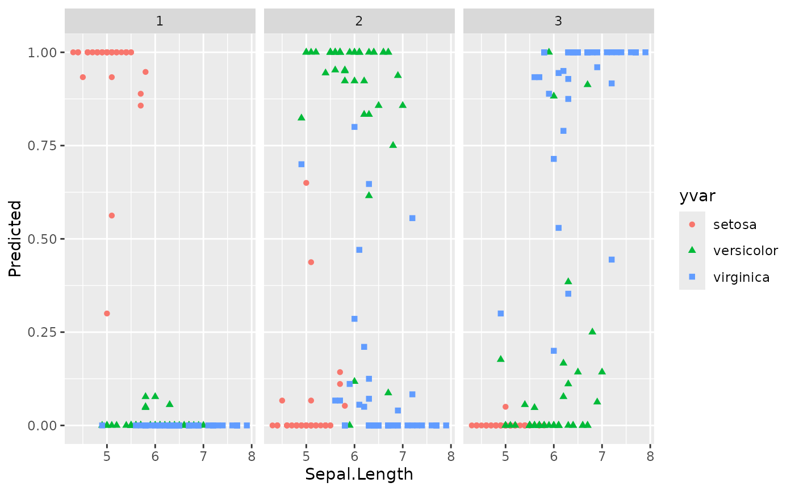
## Panel plot across all predictors
plot(gg_dta,
xvar = rfsrc_iris$xvar.names,
panel = TRUE, se = FALSE
)
#> Warning: Ignoring unknown parameters: `se`
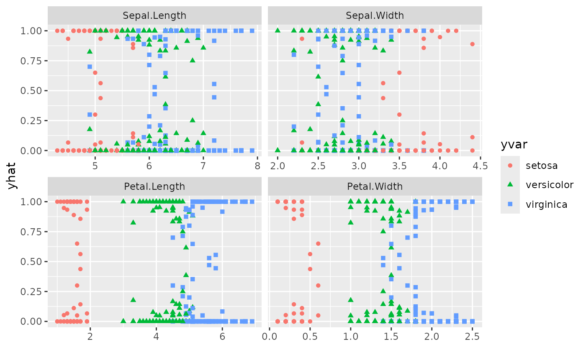
## ------------------------------------------------------------
## regression
## ------------------------------------------------------------
## -------- air quality data
# na.action = "na.impute" handles missing Ozone / Solar.R values
set.seed(42)
rfsrc_airq <- rfsrc(Ozone ~ ., data = airquality,
na.action = "na.impute", ntree = 50)
gg_dta <- gg_variable(rfsrc_airq)
# Treat Month as an ordinal factor for better visualisation
gg_dta[, "Month"] <- factor(gg_dta[, "Month"])
plot(gg_dta, xvar = "Wind")
#> `geom_smooth()` using method = 'loess' and formula = 'y ~ x'
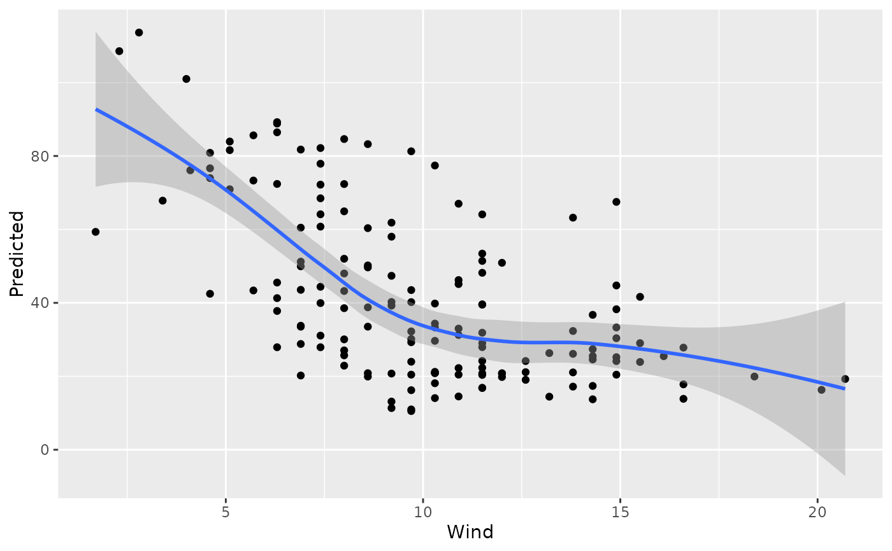
plot(gg_dta, xvar = "Temp")
#> `geom_smooth()` using method = 'loess' and formula = 'y ~ x'
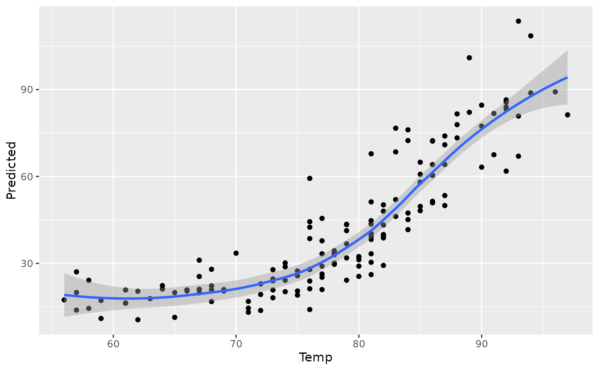
plot(gg_dta, xvar = "Solar.R")
#> `geom_smooth()` using method = 'loess' and formula = 'y ~ x'
#> Warning: Removed 7 rows containing non-finite outside the scale range (`stat_smooth()`).
#> Warning: Removed 7 rows containing missing values or values outside the scale range
#> (`geom_point()`).
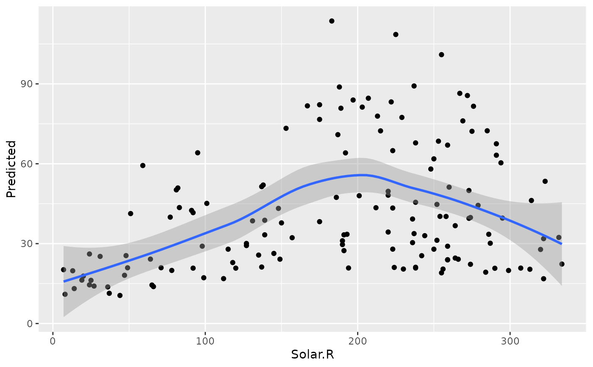
# Panel plot across continuous predictors
plot(gg_dta, xvar = c("Solar.R", "Wind", "Temp", "Day"), panel = TRUE)
#> `geom_smooth()` using method = 'loess' and formula = 'y ~ x'
#> Warning: Removed 7 rows containing non-finite outside the scale range (`stat_smooth()`).
#> Warning: Removed 7 rows containing missing values or values outside the scale range
#> (`geom_point()`).
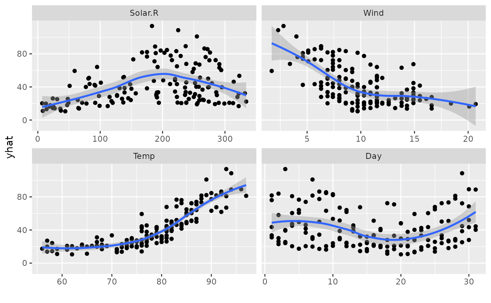
# Factor variable uses notched boxplots
plot(gg_dta, xvar = "Month", notch = TRUE)
#> Warning: Ignoring unknown parameters: `notch`
#> Notch went outside hinges
#> ℹ Do you want `notch = FALSE`?
 ## ------------------------------------------------------------
## survival examples
## ------------------------------------------------------------
## -------- veteran data
data(veteran, package = "randomForestSRC")
set.seed(42)
rfsrc_veteran <- rfsrc(Surv(time, status) ~ ., veteran,
nsplit = 10,
ntree = 50
)
# Marginal survival at 90 days
gg_dta <- gg_variable(rfsrc_veteran, time = 90)
# Single-variable dependence plots
plot(gg_dta, xvar = "age")
#> `geom_smooth()` using method = 'loess' and formula = 'y ~ x'
## ------------------------------------------------------------
## survival examples
## ------------------------------------------------------------
## -------- veteran data
data(veteran, package = "randomForestSRC")
set.seed(42)
rfsrc_veteran <- rfsrc(Surv(time, status) ~ ., veteran,
nsplit = 10,
ntree = 50
)
# Marginal survival at 90 days
gg_dta <- gg_variable(rfsrc_veteran, time = 90)
# Single-variable dependence plots
plot(gg_dta, xvar = "age")
#> `geom_smooth()` using method = 'loess' and formula = 'y ~ x'
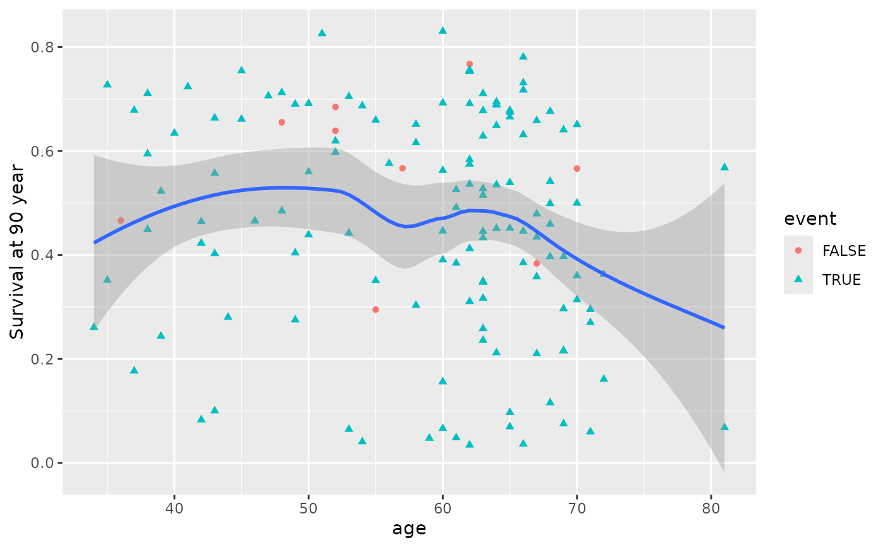
plot(gg_dta, xvar = "diagtime")
#> `geom_smooth()` using method = 'loess' and formula = 'y ~ x'
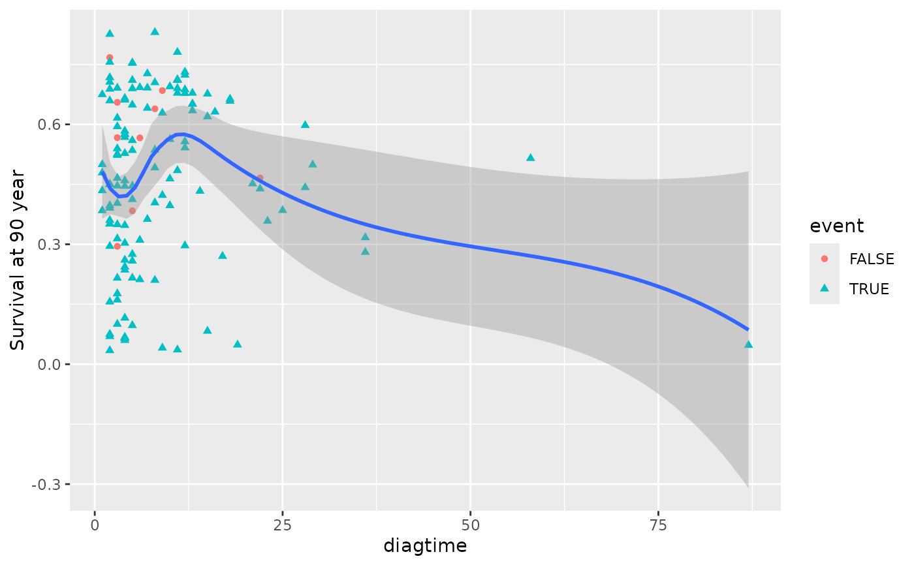
# Panel coplot for two predictors at a single time
plot(gg_dta, xvar = c("age", "diagtime"), panel = TRUE)
#> `geom_smooth()` using method = 'loess' and formula = 'y ~ x'
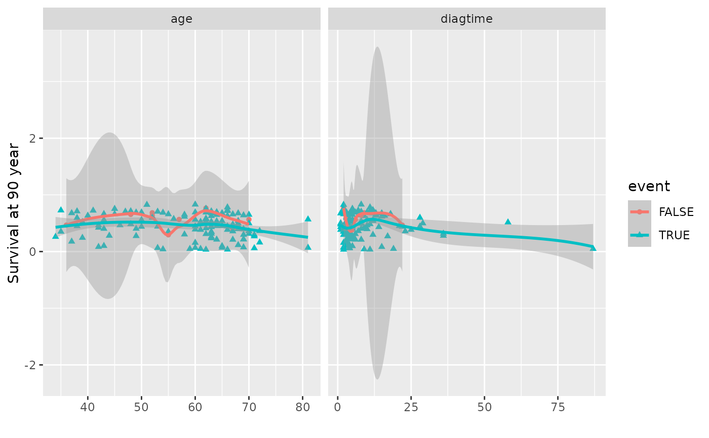
# Compare survival at 30, 90, and 365 days simultaneously
gg_dta <- gg_variable(rfsrc_veteran, time = c(30, 90, 365))
# Single-variable plot (one facet per time point)
plot(gg_dta, xvar = "age")
#> `geom_smooth()` using method = 'loess' and formula = 'y ~ x'
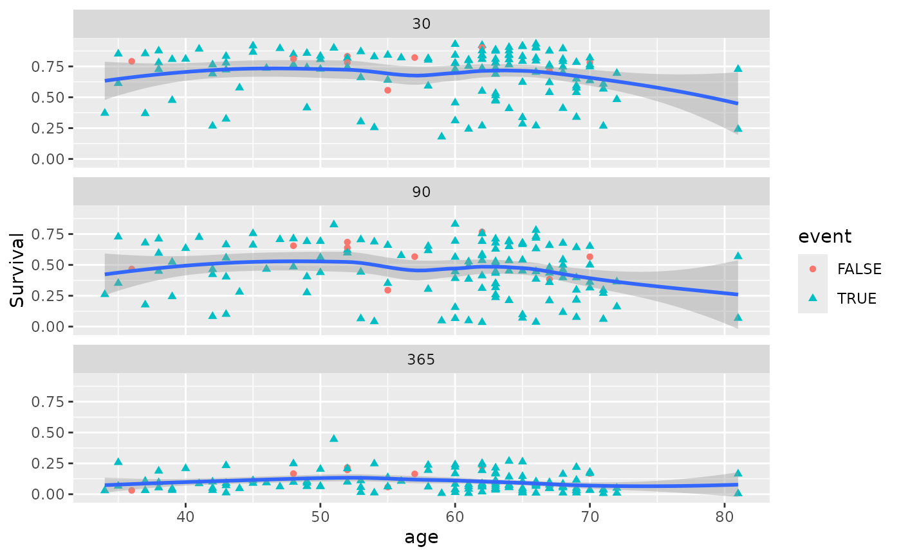
# Panel coplot across two predictors and three time points
plot(gg_dta, xvar = c("age", "diagtime"), panel = TRUE)
#> `geom_smooth()` using method = 'loess' and formula = 'y ~ x'
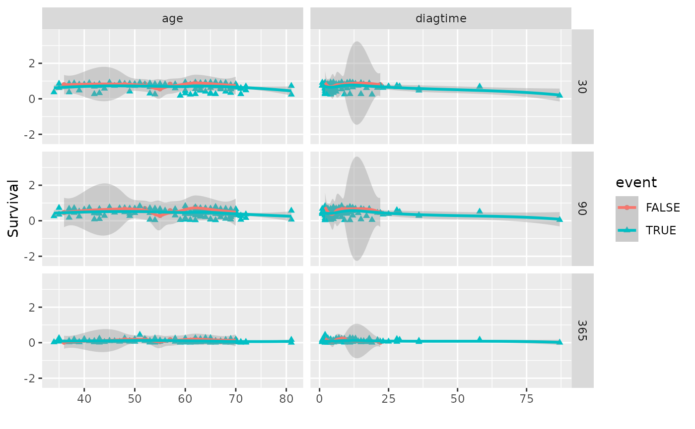